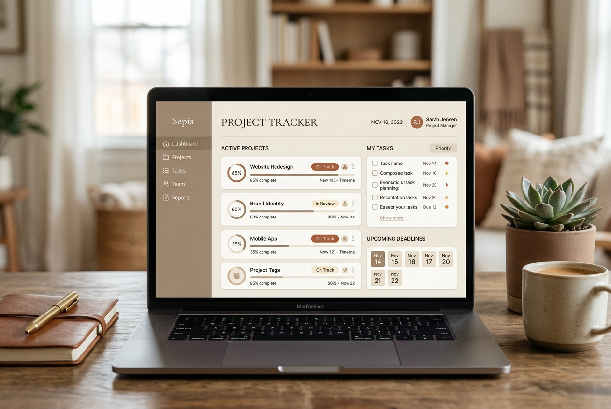
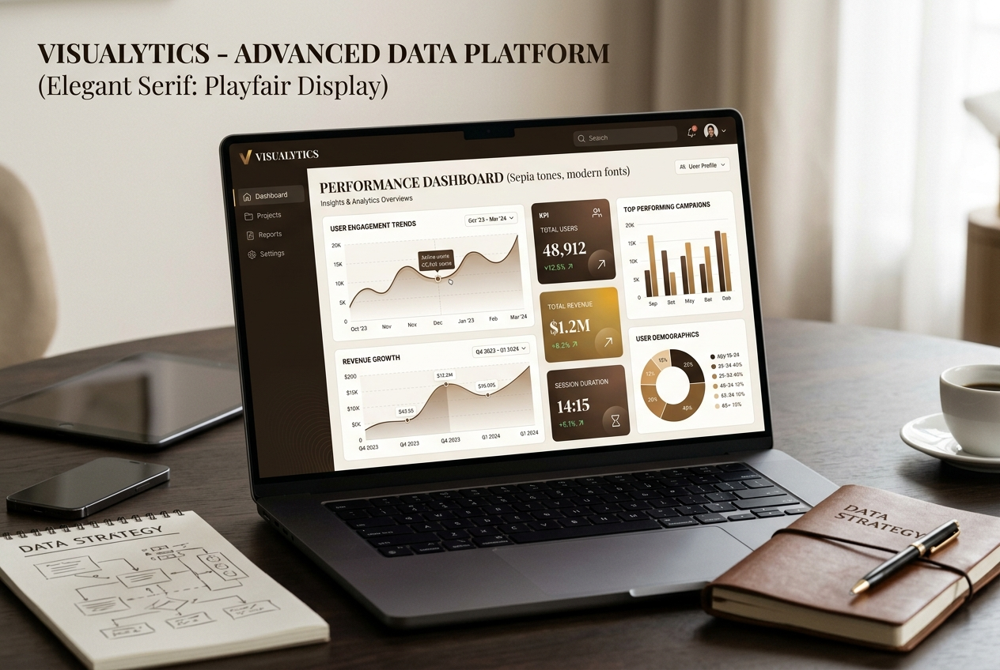

Bridget Fayomi
I design product interfaces and, in my day job, I test them — which means I catch the gap between how a screen looks and how it actually behaves. [One sentence about your background — e.g. "3 years in QA, 2 of them quietly redesigning the tools I test."] I take existing products and rebuild the parts that don't hold up: real states, real edge cases, interactions that work the way they look like they should.
Bridging Code and Craft
How I approach product design through the lens of quality assurance.
I am a Product Designer who spends my days as a QA Engineer. This dual identity means I don't just design interfaces that look stunning—I design products that actually survive real-world constraints, dynamic layout variables, and edge cases.
In my workflow, I bridge the gap between initial product requirements, engineering implementation, and aesthetic quality. I believe that a designer's responsibility doesn't end with pixel-perfect mockups; it ends when a functional, high-quality product is shipped to users.
Whether writing comprehensive PRDs, creating robust component libraries, or debugging visual layouts, I aim to create human-centered software that is as durable as it is delighting to use.
Design for Failure
Great design works when things go wrong—handling errors, empty states, and layout exceptions seamlessly.
QA as a Creative Tool
Testing code and interfaces is a form of deep research. Finding bugs helps us redesign friction points.
End-to-End Delivery
From defining product requirements (PRDs) to styling stylesheets and reviewing final commits.
Case studies
A few projects where I rebuilt an existing interface with a real visual system, not just a fresh coat of paint.
ChamsAccess
Full HTML/CSS/JS prototype for a Nigerian identity & security services company — custom SVG animation, branded typography, and interactive components layered over the existing structure.
Helpnest — Business Hours
Turned a minimal brief into a fully interactive settings page: per-day schedule toggles, dynamic status badges, and a live weekly coverage bar.

Sepia Project Tracker
A clean, focus-oriented project tracking interface featuring a dashboard, active projects view, upcoming deadlines, and customized progress tags.

Visualytics Data Platform
A responsive advanced data visualization dashboard with dark theme compatibility, clean charts, KPI widgets, and custom demographics analytics.
Duplicate project-chamsaccess.html, swap the content, link it here.
Work history
Logged like releases — because every role shipped something.
QA Engineer
- Write and execute test cases across web and mobile, and file the UX issues hiding underneath the functional bugs.
- Partner with design and engineering to close the gap between spec and shipped product before release.
- Self-initiate redesign prototypes for flows that pass QA but fail usability.
[Previous Role]
- [Responsibility or achievement — quantify where you can.]
- [Responsibility or achievement.]
[Earlier Role]
- [Responsibility or achievement.]
What I build with
The stack I reach for most, grouped by what it's for.
What I can do now
- Audit an existing product and turn the friction I find into a redesigned, testable flow.
- Build interactive HTML/CSS/JS prototypes with real component states — not just static frames.
- Write and run the test cases that catch the issues a "looks done" design usually hides.
- Take a minimal brief and scope the details no one asked for but every user will notice.
- I can write a PRD from beginning to end.